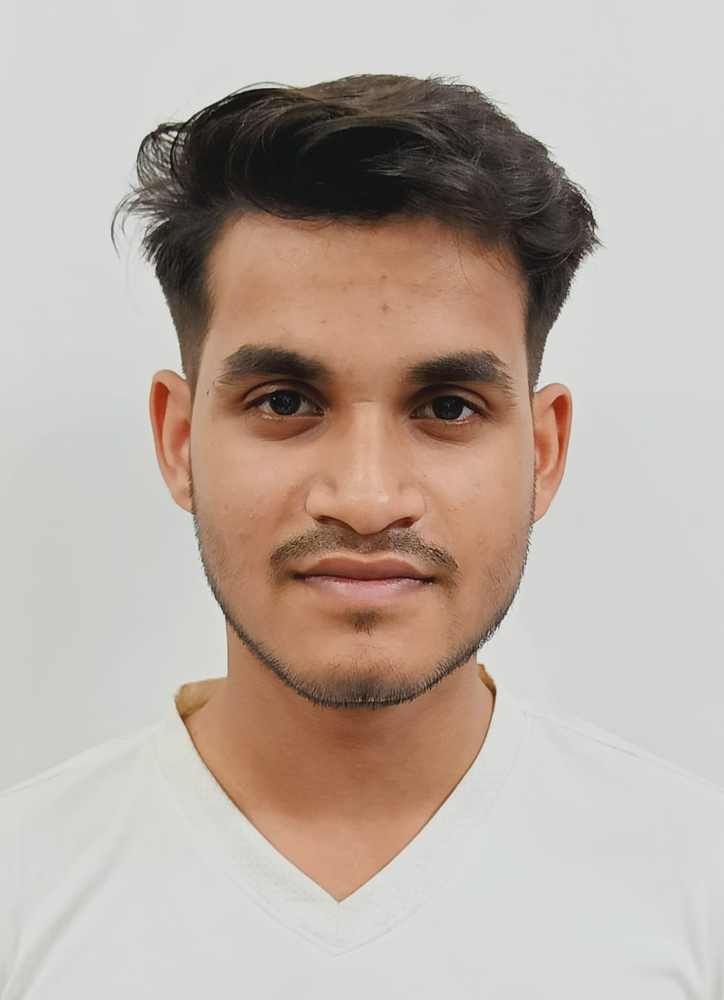

NCC Camp Coordination
Coordinating approximately 30 cadets during a 10-day camp, helping plan daily activities and respond to team concerns.
I am a business student at IIM Bangalore, interested in the intersection of digital business, finance and technology. My experiences in NCC and community initiatives have shaped the way I approach leadership, teamwork and responsibility.

01 — A little about me
An introduction to the experiences, interests and values that have influenced my academic and personal journey.
THE PERSON BEHIND THE PROFILE
My academic journey has taken me through multiple Army Public Schools before leading me to undergraduate studies in Digital Business and Entrepreneurship at IIM Bangalore.
Alongside my studies at IIMB, I am pursuing BBA studies in Fintech and AI at Lovely Professional University. These disciplines have encouraged me to explore how technology and business influence one another.
A significant part of my school experience was associated with the National Cadet Corps. As an Under Officer, I took responsibility for coordinating cadets, supporting camp activities and communicating with team members.
I am particularly interested in business strategy, finance, emerging technology, entrepreneurship and global affairs. I see my current stage as an opportunity to build strong foundations and learn through meaningful experiences.
02 — Experience
Experiences that gave me opportunities to work with people, coordinate activities and contribute to a shared objective.
An important leadership responsibility involving cadet coordination, camp participation, drill activities and communication.
A collaborative case study focused on stray animal welfare and community-based solutions.
03 — Education
A multidisciplinary academic path connecting business, digital transformation, finance and technology.
BBA in Digital Business and Entrepreneurship
BBA in Fintech and AI
Senior Secondary Education
Secondary Education
04 — Projects & interests
A selection of practical experiences and areas of academic exploration. Filter the topics to explore different categories.
Coordinating approximately 30 cadets during a 10-day camp, helping plan daily activities and respond to team concerns.
A team initiative involving an animal shelter visit, assistance to injured animals and community-focused solutions.
Exploring digital business models, entrepreneurship, consumer behaviour and how technology influences markets.
Exploring how financial technology and artificial intelligence can transform financial services and business.
05 — Achievements
Recognition and milestones from school, NCC and extracurricular activities.
'A' Grade • 67 UP Battalion, Meerut
21 SSB Bhopal
5th position among participating teams in the UP zone
4th overall among 11 Army Public Schools; Best Interjector
'A' Grade • 3 Punjab Air Squadron, Patiala
Learning programme • In progress
06 — Beyond academics
Interests that influence the subjects I explore and the questions I find worth pursuing.
Business models, markets, partnerships and the process of turning ideas into practical outcomes.
Financial technology, financial services and the changing relationship between money and technology.
Diplomacy, international affairs and the role of institutions in an interconnected world.
07 — Contact
Whether it is a conversation about business, technology, collaboration or an interesting opportunity, feel free to reach out.